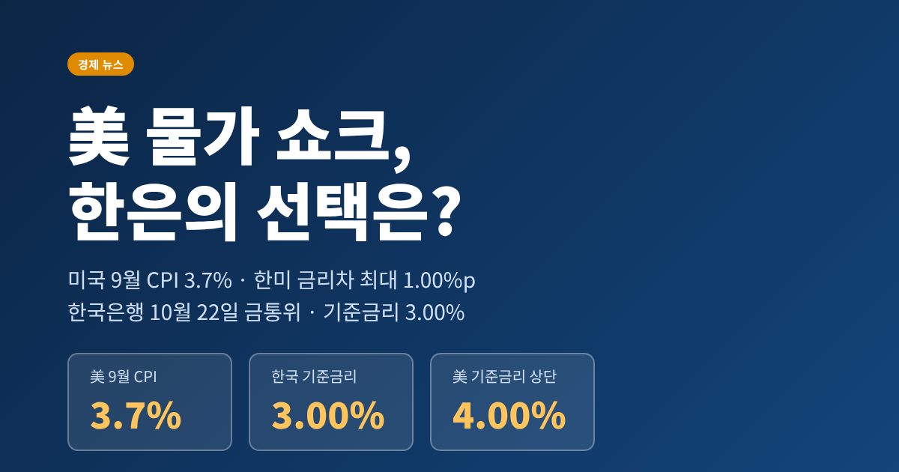
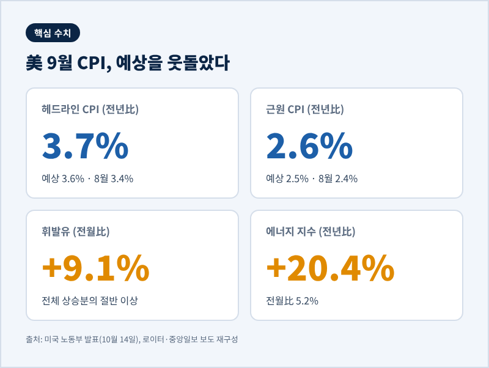
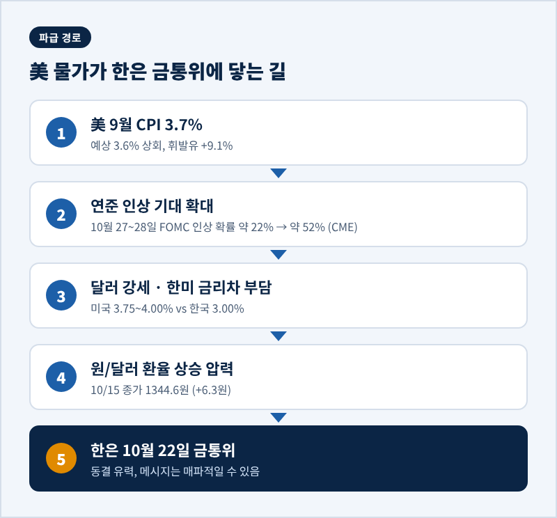
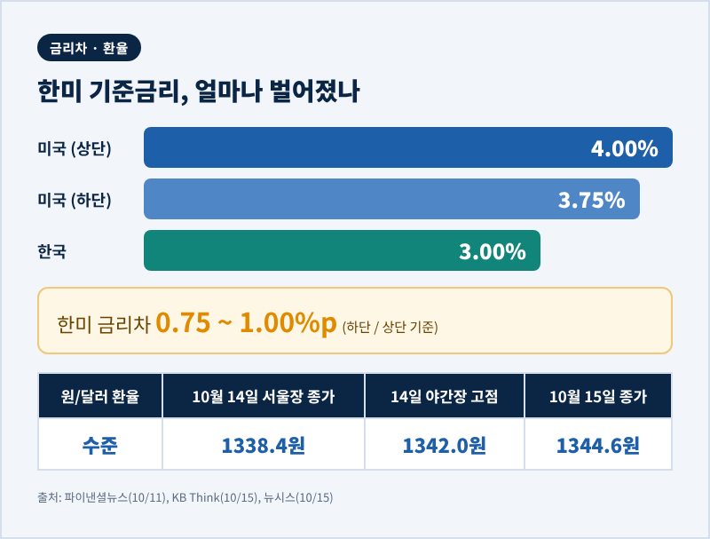
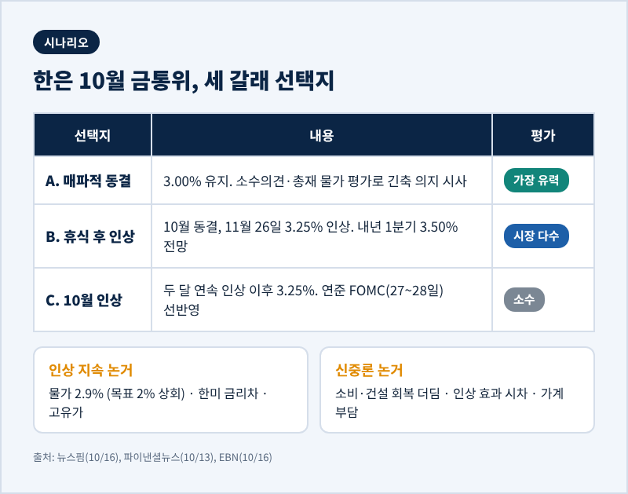
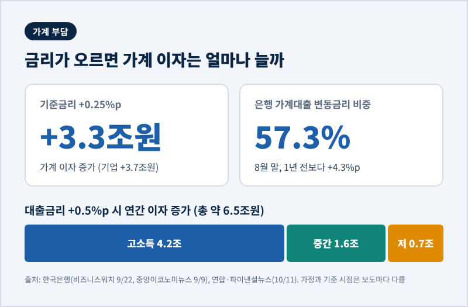

오늘은 미국 9월 소비자물가 발표가 한국은행의 10월 22일 금융통화위원회에 어떤 부담을 얹었는지 정리해 보려 합니다.
결론부터 적으면, 10월 동결은 유력하지만 그 동결의 성격이 달라졌습니다. 美 물가 쇼크로 연준의 추가 인상 가능성이 커지면서, 한은의 동결은 '쉬어가기'에 가까운 모습이 되었습니다.
미국 노동부는 10월 14일(현지시간) 9월 소비자물가지수(CPI)를 발표했습니다.
전년 동월 대비 3.7% 상승이었습니다. 8월의 3.4%보다 높고, 시장 예상치 3.6%도 웃돌았습니다. 전월 대비로는 0.6% 올랐습니다.
식품과 에너지를 뺀 근원 CPI도 전년 대비 2.6%로, 예상 2.5%와 8월 2.4%를 모두 넘었습니다.
이번 상승을 이끈 것은 에너지였습니다. 휘발유가 한 달 새 9.1% 뛰며 전체 상승분의 절반 이상을 차지했고, 에너지 지수는 전년 대비 20.4% 올랐습니다. 미국 매체 인먼은 이 에너지 가격 상승이 이란 전쟁과 맞닿아 있다고 전했습니다.

여기에 PPI(생산자물가)도 전년 대비 6.3%, 전월 대비 1.3%로 예상치 0.6%의 두 배를 넘었다고 뉴스핌은 전했습니다.
소비자물가가 이미 높은 상태에서 생산 단계의 압력까지 확인된 셈입니다.
연준은 9월에 기준금리를 0.25%포인트 올려 3.75~4.00%로 조정했습니다. 3년 만의 첫 인상이었고, 추가 인상도 시사했습니다.
예전엔 시장이 다음 인상을 12월로 보았습니다. 지금은 달라졌습니다. 로이터가 인용한 CME 페드워치에서 10월 27~28일 FOMC의 인상 확률은 CPI 발표 전 약 22%에서 약 52%로 뛰었습니다.
다만 이 수치는 집계 시점에 따라 차이가 있습니다. KB의 10월 15일 환율 리포트는 같은 확률을 32%로 적었습니다. 정확한 숫자보다 방향, 즉 '인상 가능성이 눈에 띄게 올랐다'는 점이 핵심입니다.
한국은행 입장에서 이 일정은 까다롭습니다. 한은 금통위는 10월 22일이고, FOMC는 그 닷새 뒤입니다.
한은은 미국의 결정을 보지 못한 채 먼저 선택해야 합니다.

현재 한국 기준금리는 연 3.00%입니다. 한은은 7월과 8월에 0.25%포인트씩, 모두 0.5%포인트를 올렸습니다.
미국 상단 4.00%와 비교하면 금리차는 1.00%포인트입니다. 하단 3.75%를 기준으로 하면 0.75%포인트입니다. 어느 쪽을 보든, 한국이 낮습니다.
환율은 이 부담을 곧바로 보여주었습니다.
CPI 발표 직후 야간장에서 원/달러 환율은 1342.0원까지 올랐고, 15일 서울장은 전날보다 6.3원 오른 1344.6원에 마감했습니다. 달러 강세와 외국인의 국내 주식 순매도가 겹쳤습니다.
다만 환율이 일방적으로 밀린 것은 아닙니다.
뉴시스는 반도체 수출업체들이 달러를 꾸준히 팔고 있어 상승폭이 제한된다고 전했습니다. 9월 월평균 환율도 1359.00원으로 8월 1406.30원보다 3.4% 낮았습니다. 원화는 약해졌다기보다 1340원대에서 흔들리는 모습에 가깝습니다.

금융권의 큰 줄기는 '10월 동결, 11월 인상'입니다.
뉴스핌에 따르면 모건스탠리와 한국씨티은행은 10월 동결 후 11월 추가 인상을 예상하며, 내년 1분기까지 기준금리가 3.50%에 이를 것으로 봅니다. 노무라증권은 10월 만장일치 동결을 점치고 이후 분기별 인상 가능성을 제시했습니다. 소수의견은 모건스탠리가 2명, 씨티가 1명의 인상 의견을 예상했고, 하나증권은 만장일치 동결을 내다봤습니다.
이번 동결이 '매파적'이라는 표현이 붙는 이유는 두 가지입니다.
하나는 물가입니다. 한국의 9월 소비자물가 상승률은 2.9%로 8월 3.1%보다 내려왔지만, 목표 2%를 웃돕니다. 3% 넘게 오른 품목의 비중은 4월 29%에서 9월 37%로 늘었다고 하나증권은 분석했습니다. 두바이유 월평균은 8월 88.75달러에서 9월 113.71달러로 28.1% 뛰었습니다.
다른 하나는 총재의 입장입니다. 신현송 총재는 10월 12일 국정감사에서 8월 선제 인상 덕에 9월 연준 인상보다 앞서 움직여 '시간을 벌었다'고 말했고, 물가가 목표로 수렴한다는 확신이 들 때까지 긴축 기조를 유지하겠다고 밝혔습니다.
반대편 시각도 있습니다.
NH투자증권의 강승원 연구원은 최종금리를 3.50%로 보면서 시장 일부의 3.75% 우려는 과도하며 지나친 긴축은 피해야 한다고 주장했습니다. 현대차증권 최제민 연구원도 소비와 건설 회복이 더뎌 인상 속도는 조절될 것으로 내다봤습니다. 반도체 수출은 좋지만 그 온기가 내수에 닿지 않았다는 진단입니다.

정리하면 선택지는 크게 세 갈래입니다.
첫째, 10월 동결과 함께 추가 긴축 의지를 드러내는 길입니다. 가장 유력하다는 평가가 많습니다.
둘째, 10월을 쉬고 11월 26일 3.25%로 올리는 '휴식 후 인상'입니다.
셋째, 10월에 곧바로 올리는 길인데, 두 달 연속 인상이 이례적이라는 점에서 소수 시나리오로 보입니다.
금리 논쟁은 결국 가계의 이자로 돌아옵니다.
한국은행 임광규 금융안정국장은 9월 22일 금융안정상황 보고서를 설명하며, 기준금리가 0.25%포인트 오르면 가계 이자는 3조 3000억 원, 기업 이자는 3조 7000억 원 늘어난다고 밝혔습니다. 대출금리는 약 5개월 뒤, 연체율은 약 15개월 뒤에 가장 크게 반응한다고 추정했습니다.
한은이 국회에 낸 자료에는 대출금리가 0.5%포인트 오르면 가계 이자가 연 약 6조 5000억 원 늘고, 이 가운데 고소득층이 4조 2000억 원, 중간 소득층이 1조 6000억 원, 저소득층이 7000억 원이라는 계산도 있습니다. 소득이 낮을수록 총액은 작아도 체감 부담은 무거울 수 있습니다.
은행 가계대출의 변동금리 비중은 8월 말 57.3%로 1년 전보다 4.3%포인트 높아졌습니다. 8월 신규 주택담보대출 평균금리는 변동 4.53%, 고정 4.88%였습니다. 고정금리를 택하는 비중은 7월 31.9%에서 8월 35.3%로 올랐습니다.
한은은 장기적으로 변동금리 비중이 2021년 7월 68.4%에서 2026년 6월 56.1%로 줄었다는 점도 짚었습니다. 최근 1년은 반등, 길게 보면 감소라는 서로 다른 흐름이 공존합니다.

IBK투자증권의 정용택 연구원은 고금리 부담이 생각보다 무겁고 주체별로 비대칭적이라고 진단했습니다.
수출 기업이 달러를 벌어들이는 동안 이자를 내는 가계는 다른 계산서를 받는다는 뜻입니다.
앞으로 확인할 것은 네 가지입니다.
10월 22일 금통위의 소수의견 숫자와 총재의 물가 평가, 10월 27~28일 FOMC의 결정, 고유가가 다른 품목으로 번지는지 여부, 그리고 반도체 호황이 내수로 퍼지는지입니다. EBN은 소수의견과 총재의 물가 평가를 11월 인상 여부의 신호로 꼽았습니다.
원화에는 구조적 변수도 있습니다. KB는 AI 투자 사이클이 꺾이면 반도체 수출이 줄고 외국인 순매도가 늘어 원화가 약해질 수 있다고 경고했습니다.
마지막으로 한 가지만 덧붙이겠습니다.
이번 국면의 요점은 '한은이 올리느냐 마느냐'보다 '미국의 속도가 한은의 선택 폭을 좁힌다'는 데 있습니다. 동결은 여유가 아니라 계산의 시간일 수 있습니다.
※ 이 글은 공개된 기사와 자료를 정리한 정보 제공용이며, 투자 권유가 아닙니다. 금리·환율 전망은 시점과 기관에 따라 달라질 수 있고, 투자와 대출 판단은 본인의 책임 아래 신중히 하시길 권합니다.